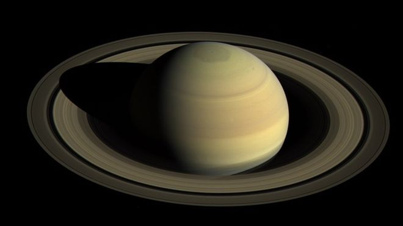

Saturn's interior is most likely composed of a core of iron–nickel and rock (silicon and oxygen compounds). This core is surrounded by a deep layer of metallic hydrogen, an intermediate layer of liquid hydrogen and liquid helium, and finally a gaseous outer layer. Saturn has a pale yellow hue due to ammonia crystals in its upper atmosphere. An electrical current within the metallic hydrogen layer is thought to give rise to Saturn's planetary magnetic field, which is weaker than Earth's, but has a magnetic moment 580 times that of Earth due to Saturn's larger size. Saturn's magnetic field strength is around one-twentieth of Jupiter's. The outer atmosphere is generally bland and lacking in contrast, although long-lived features can appear. Wind speeds on Saturn can reach 1,800 km/h (1,100 mph; 500 m/s), higher than on Jupiter, but not as high as those on Neptune. In January 2019, astronomers reported that a day on the planet Saturn has been determined to be 10h 33m 38s + 1m 52s − 1m 19s , based on studies of the planet's C Ring.
The planet's most famous feature is its prominent ring system that is composed mostly of ice particles, with a smaller amount of rocky debris and dust. At least 82 moons are known to orbit Saturn, of which 53 are officially named. This does not include the hundreds of moonlets in the rings. Titan, Saturn's largest moon, and the second-largest in the Solar System, is larger than the planet Mercury, although less massive, and is the only moon in the Solar System to have a substantial atmosphere.